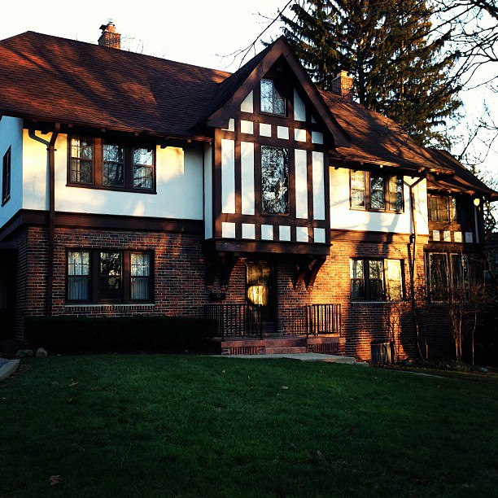

Home sweet home. Stop by our headquarters located right on the University of Michigan's Central Campus. A historical residence previously owned by the University Regents for over 50 years, 631 is the physical pulse for the Creators Co-op family. The top two floors serve as living quarters for our resident leadership, and the ground floor and basement service our workspace and gathering areas.
We are located directly next to the University-run bus route to North Campus, for more reliable instant access for Engineering, Art & Design, Music, and Architecture students to the amenities, resources, and events at 631 Oxford. Thanks everyday to our partners and sponsors who make each minute possible.
